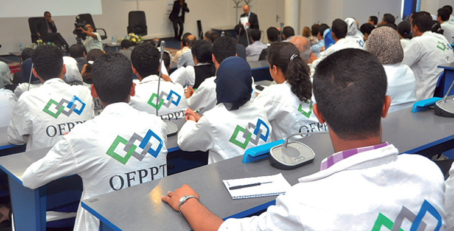

L’Office de la Formation Professionnelle a célébré l’anniversaire de l’indépendance du Maroc à travers diverses manifestations qui témoignent de notre fierté d’accéder à l’indépendance. Nous avons organisé un défilé et des événements culturels pour promouvoir l'unité nationale, la communauté participant à des événements de célébration, notamment des spectacles artistiques et une sensibilisation historique pour sensibiliser aux valeurs d'indépendance et à l'esprit d'unité nationale.

احتفل مكتب التكوين المهني بذكرى استقلال المغرب بفعاليات متنوعة تعكس فخرنا بتحقيق الاستقلال. نظمنا موكبًا وفعاليات ثقافية تعزز الوحدة الوطنية، مع مشاركة المجتمع في فعاليات احتفالية تشمل عروضًا فنية وتوعية تاريخية لنعزز الوعي بقيم الاستقلال وروح الوحدة الوطنية.

Après le tremblement de terre qui a secoué la région, la Fondation pour la Formation Professionnelle a organisé une campagne de don de sang, et l'initiative communautaire a suscité une large participation. Les gens ont participé aux dons pour contribuer à sauver des vies et à aider les victimes touchées par la catastrophe naturelle.
بعد الزلزال الذي هز المنطقة، نظمت مؤسسة التكوين المهني حملة تبرع للدم، حيث اجتذبت المبادرة المجتمعية مشاركة واسعة. شارك الناس في التبرع للمساهمة في إنقاذ الحياة ومساعدة الضحايا المتأثرين بالكارثة الطبيعية.

A l'occasion de la célébration de l'anniversaire de la « Marche Verte », la Fondation pour la Formation Professionnelle et l'Apprentissage (OFPPT) au Maroc a organisé diverses manifestations, dont des ateliers de sensibilisation, des conférences pédagogiques et des performances artistiques qui témoignent de l'importance de cet événement historique au Maroc. l'histoire du Royaume du Maroc.

بمناسبة الاحتفال بالذكرى للمسيرة الخضراء، نظمت مؤسسة التكوين المهني والتمهين في المغرب فعاليات متنوعة، شملت ورش عمل توعية، محاضرات تثقيفية، وعروض فنية تعكس أهمية هذا الحدث التاريخي في تاريخ المملكة المغربية.

La formation initiale est une formation dont le cursus est sanctionné par un diplôme marquant la fin du parcours de formation Après l'obtention du diplôme, le lauréat est apte à exercer son métier

Les formations qualifiantes sont des formations de courte durée, de trois à neuf mois, qui complètent la formation initiale et ouvrent d'avantage les portes du marché du travail
Alternative par excellence pour la formation et le perfectionnement des salariés et des demandeurs d'emploi Les cours du soir offrent un diplôme équivalent à celui des formations en cours du jour

Le Technicien Spécialisé en gestion des entreprises organise son travail, seul ou en collaboration avec l’encadrement, en tenant compte des tâches et du délai nécessaire pour que les informations à traiter soient disponibles.
Un technicien spécialisé en infrastructure digitale est un professionnel chargé d’exploiter, sécuriser, optimiser et faire évoluer les ressources informatiques de l’entreprise.

Le technicien spécialisé en Développement Digital conçoit, réalise et assure la maintenance technique d’applications informatiques et les met en œuvre à l'aide des langages de programmation.
.jpg)
Le Diplôme de Technicien en Assistant Administratif chez OFPPT donne au stagiaire les compétences nécessaires pour découvrir les métiers de gestion et du commerce, garantir sa polyvalence et faciliter son choix de l'option professionnelle la plus compatible avec son profil.
Vous pouvez vous inscrire ici et voir tout ce qui concerne votre parcours professionnel